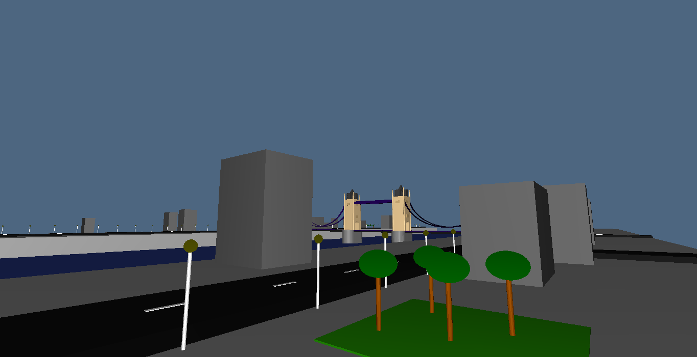
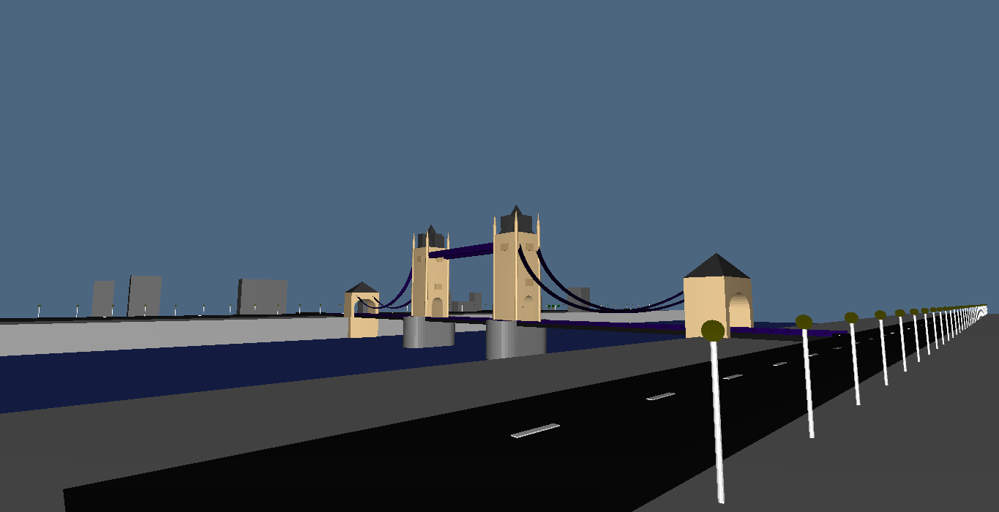
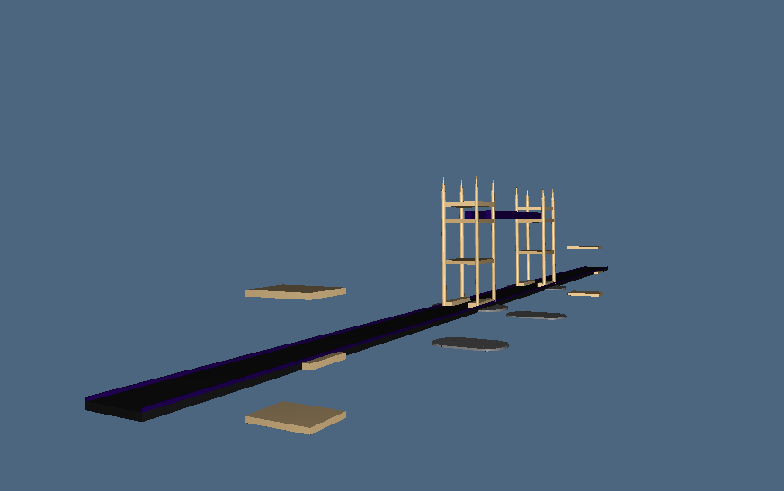
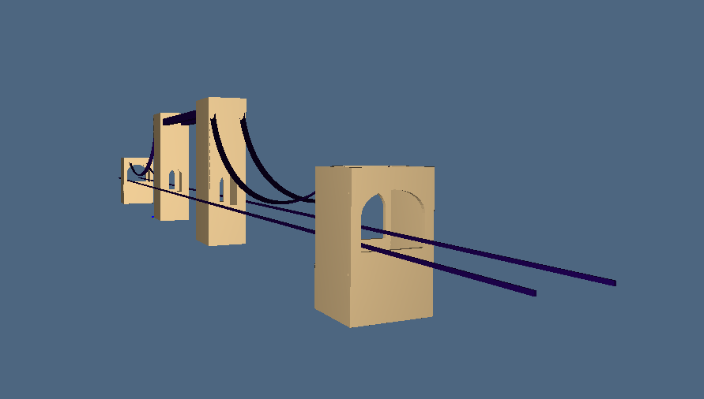
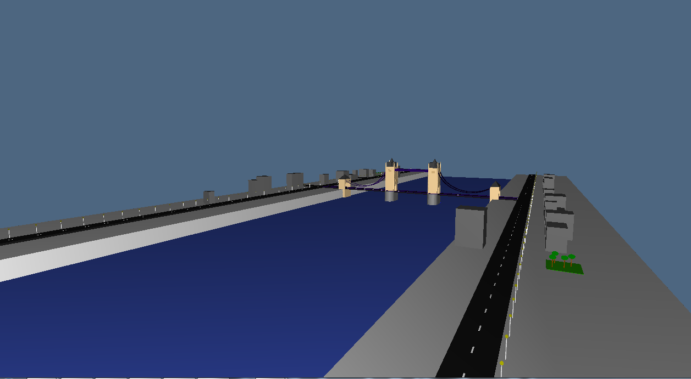
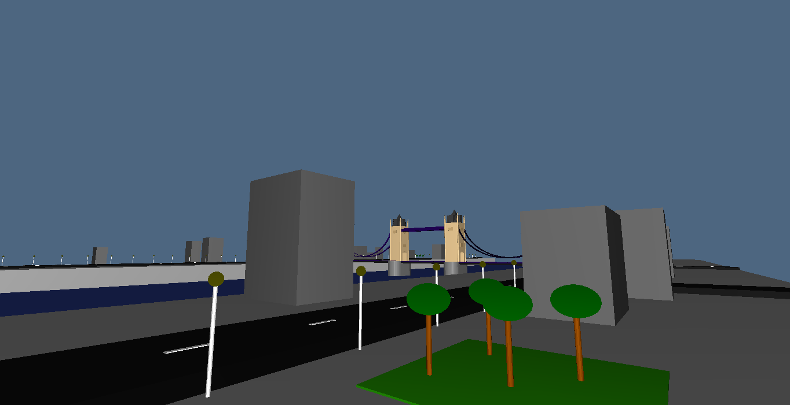
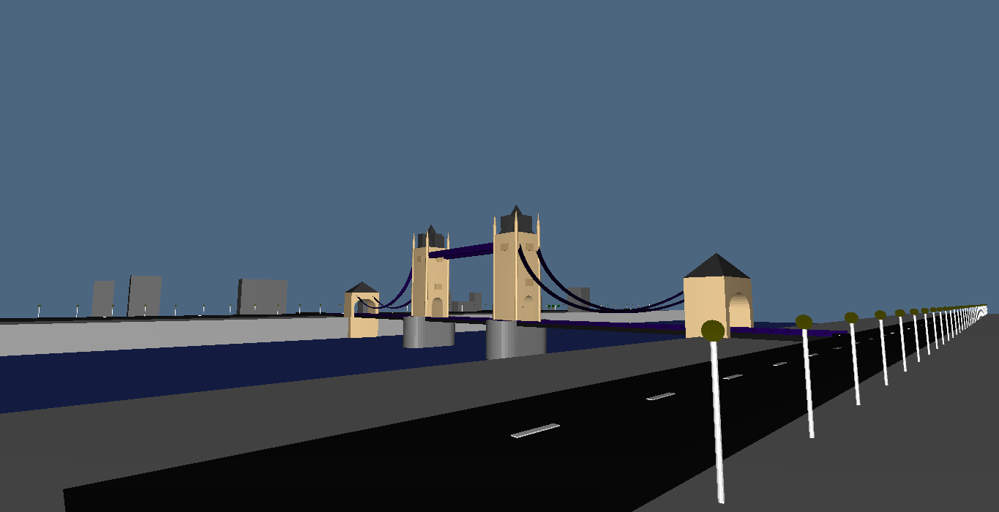
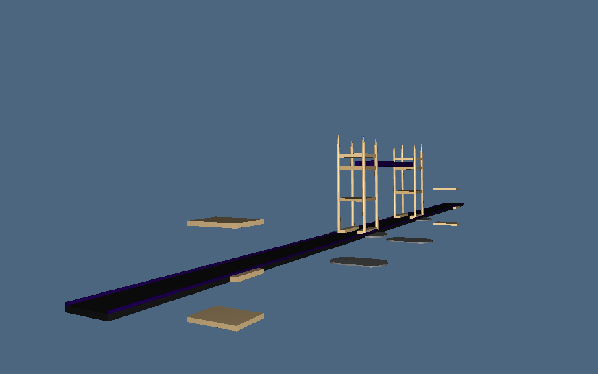
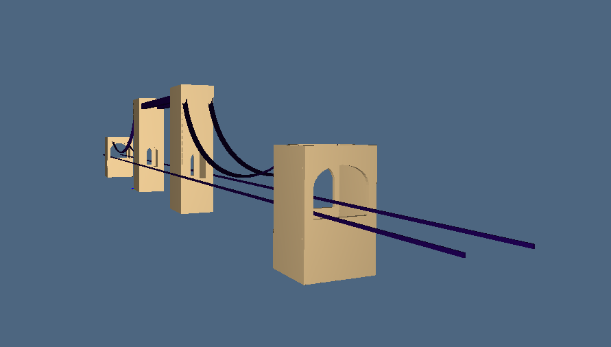
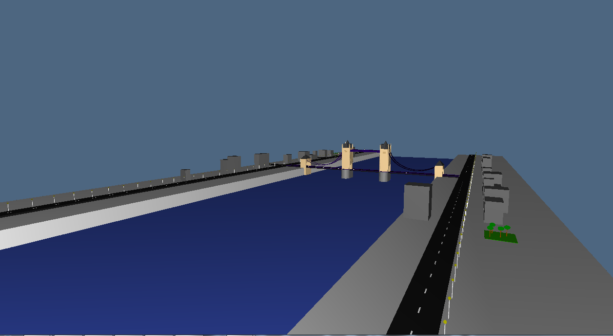

Building: Tower Bridge
Name: Alessandro
Surname: Del Duca
University ID: 427156
Documentation:
- plasm.net
- Computational Graphics 2014
- Tower Bridge Wikipedia page
Link to project:
- exercise1.py
- exercise2.py
- exercise3.py
- exercise4.py
Images:
 




Description:
Il progetto è stato realizzato grazie all'utilizzo delle forme di pyplasm, integrate ad alcune funzioni messe a disposizione dalle librerie lar (ad esempio i tiranti del ponte).





Description:
Il progetto è stato realizzato grazie all'utilizzo delle forme di pyplasm, integrate ad alcune funzioni messe a disposizione dalle librerie lar (ad esempio i tiranti del ponte).